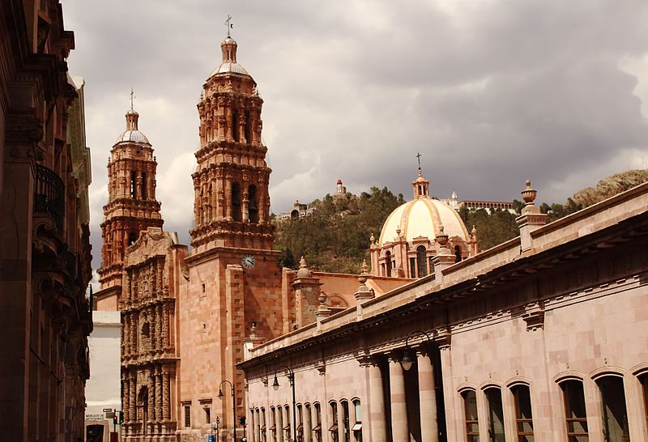

Zacatecas, oficialmente llamado Estado Libre y Soberano de Zacatecas es uno de los treinta y un estados que, junto con Ciudad de México, forman los Estados Unidos Mexicanos. Fue fundado el 23 de diciembre de 1588. Su capital y ciudad más poblada es la homónima Zacatecas. Está ubicado en la región centronorte del país, limitando al norte con Coahuila, al noreste con Nuevo León, al este con San Luis Potosí, al sur con Guanajuato, Jalisco y Aguascalientes, al suroeste con Nayarit y al oeste con Durango. Con 75,539 km² es el octavo estado más extenso, con 1,579,209 habs. en 2015, el octavo menos poblado y con 19.73 hab/km² y el sexto menos densamente poblado.
La capital es la ciudad homónima, Zacatecas. Esta ciudad ostenta los títulos de La Muy Noble y Leal Ciudad de Nuestra Señora de los Zacatecas, otorgados por el Rey Felipe II de España el día 20 de junio de 1588 en San Lorenzo de El Escorial, Madrid.56 Así mismo, le concedió el Escudo de Armas, emblema en el que fue incluido el cerro de la Bufa
